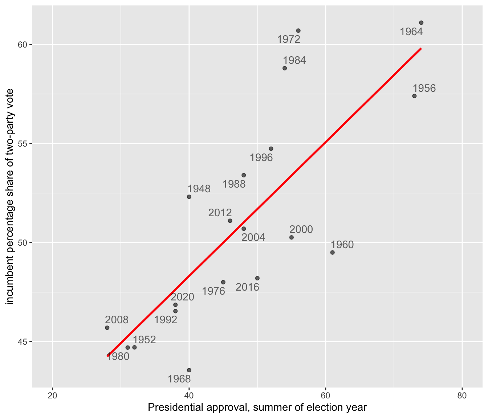
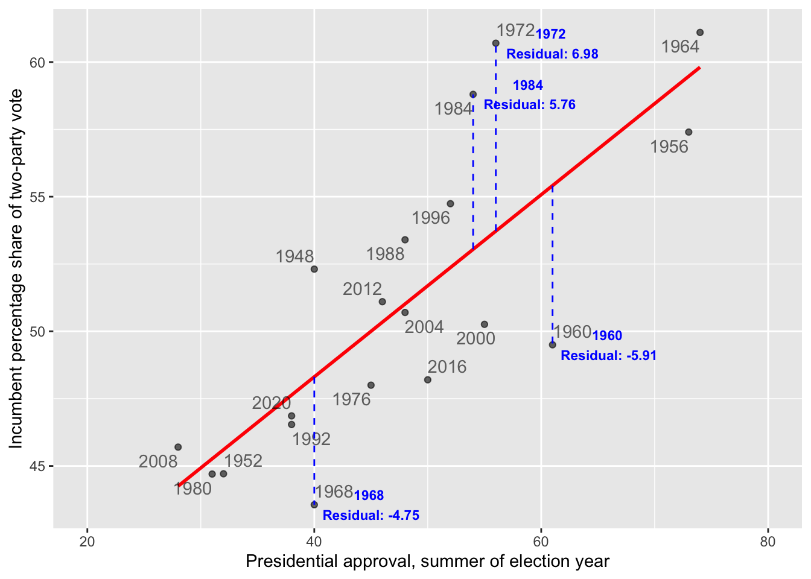
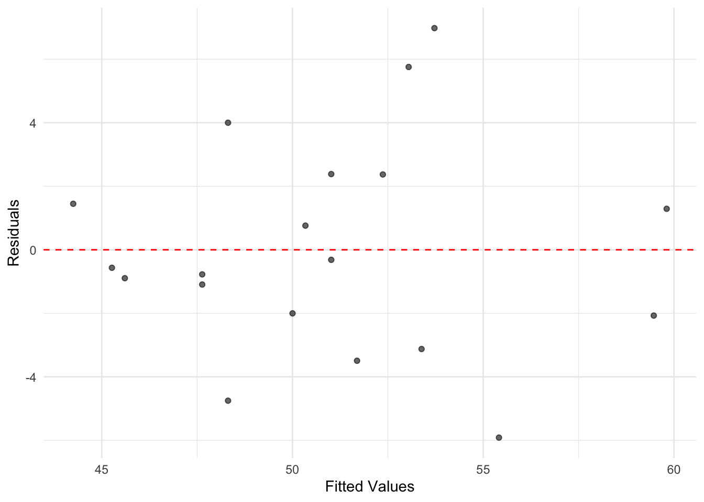

Chapter 10 Linear Models
Chapter 10 introduces the estimation and interpretation of linear regression models.
Learning objectives and chapter resources
By the end of this chapter you should be able to: (1) explain the form of the simple and multiple linear regression model; (2) interpret model estimates; (3) interpret measures of model fit; (4) explain the data generating assumptions necessary for regression estimation and inference; (5) apply simple and multivariate regression to US presidential election fundamentals and mass party identification; and (6) construct tabular and graphical presentation of model estimates. The material in the chapter requires the following packages: ggplot2 and readr from the tidyverse (Wickham 2023b), ggrepel (Slowikowski 2023), survey (Lumley 2021), and two new packages requiring installation, memisc (Elff 2023) and jtools (J. A. Long 2023). The material uses the following datasets: prez.csv and anes 2020 survey.rdata from https://faculty.gvsu.edu/kilburnw/inpolr.html.
Introduction
Linear models are perhaps the most common methodological form of quantitative social science. We have already encountered a linear model in Chapter 1, an election forecast. The phrase ‘linear models’ often refers to a particular type of linear model, an “Ordinary Least Squares” (OLS) regression model , which is a fundamental statistical technique used to estimate the relationship between a Y (or dependent variable) and one or more X (or independent variables). The primary purpose of OLS regression is to identify the best-fitting linear model that explains how the independent variables relates to the dependent variable.
10.1 Simple linear model of election fundamentals
In Chapter 10 we review the fundamentals-based model of US presidential elections, starting with the incumbent president’s share of the Democratic plus Republican popular vote as related to presidential approval. Then from there we examine the model in full.
Read in the prez.csv dataset:
This election fundamentals dataset consists of 19 observations of presidential elections from 1948 to 2020, displayed in Table 10.1. The table consists of 19 rows, one for each presidential election, and seven variables, characteristics of each election year. The column year records the election year. The column incprez records the name of the incumbent president. The column vote records the incumbent candidate’s share of November popular vote for two major party candidates. The last three columns are measures of the three fundamentals: (1) approval: incumbent Gallup approval in late June or July; (2) qgdprate: quarterly growth rate in GDP for the second quarter of the election year; and (3) a binary indicator of incumbency status: 0, and 1 for a candidate running for their party’s third term in the White House.
| year | incprez | vote | approval | qgdprate | incstatus |
|---|---|---|---|---|---|
| 1948 | truman | 52.31 | 40 | 1.7 | 0 |
| 1952 | truman | 44.71 | 32 | 0.2 | 1 |
| 1956 | eisenhower | 57.40 | 73 | 0.8 | 0 |
| 1960 | eisenhower | 49.50 | 61 | -0.5 | 1 |
| 1964 | johnson | 61.10 | 74 | 1.1 | 0 |
| 1968 | johnson | 43.56 | 40 | 1.7 | 1 |
| 1972 | nixon | 60.70 | 56 | 2.3 | 0 |
| 1976 | ford | 48.00 | 45 | 0.7 | 1 |
| 1980 | carter | 44.70 | 31 | -2.1 | 0 |
| 1984 | reagan | 58.80 | 54 | 1.7 | 0 |
| 1988 | reagan | 53.40 | 48 | 1.3 | 1 |
| 1992 | hwbush | 46.54 | 38 | 1.1 | 1 |
| 1996 | bclinton | 54.74 | 52 | 1.7 | 0 |
| 2000 | bclinton | 50.26 | 55 | 1.8 | 1 |
| 2004 | wbush | 50.70 | 48 | 0.8 | 0 |
| 2008 | wbush | 45.70 | 28 | 0.5 | 1 |
| 2012 | obama | 51.10 | 46 | 0.4 | 0 |
| 2016 | obama | 48.20 | 50 | 0.3 | 1 |
| 2020 | trump | 46.86 | 38 | -9.1 | 0 |
Let’s look further at the example from the presidential election forecast by visualizing the scatterplot of the incumbent party’s share of the two-party vote and presidential approval, presented in Figure 10.1. The code for the scatterplot includes a linear regression line (‘line of of best fit’) that relates the vote share to approval.
library(ggrepel)
ggplot(data=prez) +
stat_smooth(method="lm", se=FALSE, aes(x=approval, y=vote),
color="red") +
labs(y="incumbent percentage share of two-party vote",
x="Presidential approval, summer of election year") +
geom_text_repel(aes(x=approval, y=vote, label=year), alpha=.6) +
geom_point(aes(x=approval, y=vote), alpha=.6, show.legend = FALSE) +
scale_x_continuous(limits=c(20, 80)) +
theme(legend.position="bottom") 
FIGURE 10.1: Linear trend relating incumbent party percent of the two-party popular vote (on the Y-axis) to presidential approval from June or July of each election year (on the X-axis).
At the center of OLS regression lies the concept of the “line of best fit,” which is the linear equation that best describes the relationship between the observations for independent and dependent variables. This line is drawn through the scatterplot in Figure 10.1. The equation of a line in slope-intercept form is \(Y = a + bX\), where \(Y\) is the dependent variable, \(X\) is the independent variable, \(a\) is the intercept of the line on the Y-axis, and \(b\) is the slope of the line. The line equation in the figure is \(Y = 34.78 + 0.338X\).
The slope (\(b\)) quantifies the change in the dependent variable for a one-unit change in the independent variable. The y-intercept, 34.78, is the linear prediction of the incumbent share of the vote when presidential approval is at 0, a level of approval not observed within the dataset and hypothetical. The slope .338 estimates how a one-unit (1 percent) change in approval changes the incumbent share of the vote, by .338 percent. For each one-unit change in approval percentage, on average, the incumbent’s share of the two-party vote changes by about a third of a percentage point. So it takes about a three-point change in approval to move the incumbent vote share by one point. In Figure 10.1, the OLS trend line is estimated and displayed through the stat_smooth() function, specifying a linear model (“method="lm"”) and the name of the variables on the X and Y axes. This function appears in the code as the line just below the ggplot(data=prez) line.
Given the data, apart from the figure the linear model estimates are estimated with the lm() function, specifying Y and X separated by a “tilde” character: lm(vote ~ qgdprate, data=prez), the data source.
##
## Call:
## lm(formula = vote ~ approval, data = prez)
##
## Coefficients:
## (Intercept) approval
## 34.781 0.338(The ~ symbol is usually located next to the number 1 key on USA layout keyboards). Here the lm() function requires that we list the dependent followed by independent variables, and an identification of the data source with data=. There are two broad purposes for estimating a linear model.
One is explanation. For example, the model offers an explanation – through the slope – of how close the relationship is between approval and vote. The estimate .338 tells us how much, on average, the incumbent vote percent should change given a one-unit change in approval.
The second is prediction. Using the equation, \(Y = 34.78 + 0.338X\), given the estimated linear relationship between approval and the vote, we could forecast the Democratic party’s expected vote share. Assuming President Biden’s approval rating is 39 percent, then substituting 39 percent for X results in a predicted vote share of \(Y = 34.781 + 0.338(39)\), or \(Y = 47.96\) percent. Based on solely the average linear relationship between approval and vote percent, the predicted Democratic share of the vote would be 47.96 percent.
Correlation and simple linear regression
The slope and the linear Pearson correlation coefficient relate to each other in a specific way. The linear correlation, \(r\), is a measure of the linear relationship between two variables. The correlation quantifies the strength and direction of the linear relationship between two interval or ratio scaled (numeric) measures, ranging from -1 to 1: a value of -1 indicates a perfect negative linear relationship (as one variable increases, the other decreases proportionally); a value of 0 means no linear relationship; a value of 1 signifies a perfect positive linear relationship (both variables increase or decrease together proportionally). Because variables can have different units or scales (income measured in dollars vs. age in years), the correlation standardizes these differences by converting the variables to z scores. Since the z scores expresses how far a value is from the mean in terms of standard deviations, it converts both variables to the same scale. Pearson’s \(r\) correlation is defined in these terms
\[ r = \frac{\sum z_x z_y}{N}\]
Here \(z_x\) and \(z_y\) are z scores for the two variables, and \(N\) is the number of paired observations. The correlation is the average product of the standardized values, providing a numerical summary of how the two variables move together. With sample data, the formula denominator is \(N-1\) to account for sample variability. The cor() function in R automatically assumes sample data:
## [1] 0.788The result is equivalent to
## [1] 0.788From the equation of the line \(Y = a + bX\), the slope is related to Pearson’s r (the linear correlation) through the formula:
\[b = r \frac{s_Y}{s_X}\]
in which \(s_Y\) and \(s_X\) are the standard deviations of \(Y\) and \(X\). Since the standard deviation is always a positive quantity, \(b\) and \(r\) will always share the same sign — if \(Y\) tends to increase with \(X\), \(b\) (and \(r\)) will be positive; if \(Y\) decreases as \(X\) increases, \(b\) (and \(r\)) will be negative.
\[b = r \frac{s_Y}{s_X} = .788 * \frac{5.471}{12.75} = .3381\]
This result matches the slope reported from the lm() function.
We can rearrange these terms to see that \(r = b \frac{S_X}{S_Y}\). Pearson’s r correlation is the slope multiplied by the ratio of the spread (standard deviation) in \(X\) (approval) relative to spread in the \(Y\) (vote percent). Substituting in terms,
\[r=.3381*(12.75/5.471) = .788\]
Line of best fit
The OLS line is estimated by finding the line (out of all possible lines) that minimizes the sum of the squared differences between the observed (\(Y_i\)) and predicted (\(\hat{Y}_i\)) values of the dependent variable for each election year, \(\Sigma (Y_i - \hat{Y}_i)^2\) . Minimizing this sum of squared differences is known as the ‘least squares criterion’. For any observation on \(Y\), the difference between the observed and expected value on \(Y\) is known as a residual.
In the context of the model of election fundamentals, these residuals represent the error in the prediction of the model for each year’s incumbent vote share. Figure 10.2 annotates the residuals for four observations. The two in the upper half of the figure are positive (for 1972 and 1984), while in the lower half they are negative (for 1960 and 1968). The residual is the distance along the dashed vertical line.

FIGURE 10.2: The dashed vertical lines mark the residuals along the Y-axis, the difference between the observed and expected. The residuals for 1984 and 1972 are positive, because the incumbent candidate’s vote share over performed model expectations based on presidential approval. The residuals for 1968 and 1960 are negative, because the incumbent under-performed.
For Figure 10.2, finding the best fitting line means for each observation, calculating the difference between each observed value of the dependent variable and its corresponding predicted value (based on the regression line), squaring these differences to ensure that negative and positive deviations do not cancel each other out, and then summing these squared differences. This summed difference is the “sum of squared residuals”, arithmetically \(\Sigma(y_i - \hat{y}_i)^2\). Through OLS, the y-intercept \(a\) and slope \(b\) of the line are the values minimizing this sum. By doing so, OLS regression ensures that the resulting line of best fit is positioned in such a way that it minimizes the prediction error across all observations.
10.2 Understanding and evaluating model fit
After estimating the line, we want to evaluate how well it fits the data: How close are the predicted values to the actual observations on incumbent party support and GDP growth? The size of the residuals — the differences between the observed and predicted values for — provides a starting point to answer this question.
Root mean square error
Root Mean Square Error (RMSE) is a common measure of model fit. It quantifies the average magnitude of residuals, capturing how well the model’s predictions match the observed data. RMSE is calculated as:
\[ Root\ mean\ square\ error\ (RMSE)=\sqrt{\frac{\Sigma(y_i - \hat{y}_i)^2}{N}}\]
Here, \(y_i\) represents the observed values, while \(\hat{y_i}\) the predicted values, and N the number of observations.
As a measure of fit, it reflects how well the model’s predictions match the actual data. The RMSE finds the square root of the average squared residuals, capturing a measure of the size of the errors in the same units as the dependent variable. Lower RMSE values indicate better model fit, as the predictions are closer to the actual observations. However, RMSE is sensitive to outliers because squaring the residuals amplifies larger errors, which can disproportionately influence the result.
Within an R object that stores model results, there are additional pieces of information about the model, beyond the slope and y-intercept. We can take the lm(vote ~ approval, data=prez) and store the results as model1:
The model residuals are stored within the object as model1$residuals. (Enter names(model1) to observe the other stored variables.) We could apply the mean() and sqrt() functions directly to model1$residuals or extract and save the residuals to a separate object and create an rmse object to save the RMSE:
## [1] 3.279The result, 3.279, measures the average magnitude of the errors between the predicted and actual values of the incumbent percentage share of the vote. On average, the predictions made by the model are off by about 3.279 percentage points from the actual values.
Because the dependent variable is measured in percentages, the RMSE is relatively straightforward to interpret: each unit corresponds directly to a percentage point. Still, there is no definitive “cutoff” for what constitutes a good or bad fit. The quality of the fit is relative to the specific context of the data, the purpose of the analysis, and expectations about how well a model should perform, often in comparison to other models.
R-squared
Another metric for assessing model fit is based on the idea of reducing error. Imagine that we are interested in predicting a future vote based on the model’s slope and y-intercept — basically forecasting a future vote based on the historical relationship between approval and vote. To evaluate the model’s usefulness, we compare it to a baseline of using the mean vote percentage to predict the incumbent vote share in a future election. The extent to which the linear model improves upon this baseline, reducing error, forms the basis of a model fit statistic.
To construct the metric, we define the following quantities:
ESS (Error Sum of Squares), the sum of the squared residual errors (residuals), measures the total error in the mode’s predictions. Arithmetically: ESS = \(\Sigma(y_i - \hat{y}_i)^2\), where \(y_i\) are the observed y values, and \(\hat{y}_i\) are the predicted values.
TSS (Total Sum of Squares), the total variation in the observed data, is calculated as the summed squared difference between each observed y and the mean. Arithmetically: TSS = \(\Sigma(y_i-\bar{y})^2\).
RSS (Regression Model Sum of Squares) is the variation in the observed data explained by the regression model. It is calculated as the summed squared difference between the predicted value \(\hat{y_i}\) and the mean \(\bar{y}\). Arithmetically: RSS = \(\Sigma(\hat{y_i}-\bar{y})^2\).
The RSS quantifies how much better the regression model’s predictions are compared to simply using the mean of \(Y\) as a predictor. It measures how much additional information \(X\) provides about predicting \(Y\) beyond the mean of \(Y\) itself. The sum of ESS and RSS equals TSS, \(ESS + RSS = TSS\), the total variation in \(Y\) splits into two parts: the explained variation RSS and unexplained variation ESS. The ESS is the error in this model prediction — the difference between the observed \(Y\) values and the predicted \(Y\) values. The ratio \(\frac{RSS}{TSS}\) is the proportion of the total variation in \(Y\) accounted for by the predictor \(X\).
This quantity, the \(\frac{RSS}{TSS}\) is known as \(R^2\) (“r-squared”), a measure of model fit.
\[R^2 = \frac{RSS}{TSS} = 1-\frac{ESS}{TSS} \] We can rewrite \(R^2\) as \(1- ESS / TSS\). It is equal to the square of the Pearson’s r correlation. Because it represents the proportion of the total variation in \(Y\) explained by the model (RSS) relative to the total variation in \(Y\) (TSS), \(R^2\) ranges from 0 to 1. Values closer to 1 indicate that the model explains more of the variation in the outcome, reflecting a better fit, while values closer to 0 indicate a poorer fit. While we have already calculated Pearson’s r, we will calculate the \(R^2\) term by calculating the RSS and TSS terms, starting with the TSS.
The lm() function automatically records the fitted values, the \(\hat{y_i}\), in the model object model1. While we have already extracted the residuals, the predicted values are stored as the fitted.values in model1.
The mean vote is mean(prez$vote), or 50.96. To calculate the TSS, we first subtract this mean from the vote:prez$vote-mean(prez$vote). Then we square this difference, (prez$vote-mean(prez$vote))^2. Finally, we sum up these squared differences.
## [1] 538.8Similarly, the RSS, regression sum of squares is equal to the fitted.values from model1 minus the mean(prez$vote), squared, then summed up:
## [1] 334.6Since we already have the residuals calculated in the dataset, stored as a variable residuals, we can simply sum these squared differences:
## [1] 204.2According to the formula, \(R^2 = \frac{RSS}{TSS}T\).
## [1] 0.6209The result, .6209, is the \(R^2\) statistic. The statistic is stored within the summary() of the model object, and you can verify it directly by typing summary(reg1)$r.sq to see the computed value of \(RSS/TSS\).
The \(R^2\) can be interpreted from a few different perspectives. In simple linear regression \(R^2\) is equivalent to the squared Pearson correlation (\(r^2\)) between the observed \(y_i\) values and the predicted \(\hat{y_i}\) values. Both \(R^2\) and \(r^2\) measure the proportion of the variation in the dependent variable that can be explained by the independent variable(s).
The key interpretation is that \(R^2\) represents the “proportion of variance explained”: About 62 percent of the variance in the dependent variable (vote) is explained by the independent variable (approval). Since \(R^2\) is a proportion between 0 and 1, an \(R^2\) of .62 suggests that the model does a reasonably good job of accounting for variability in incumbent party vote share. Nonetheless, about 38 percent of the variance is not explained by the model.
Next, of course, the \(R^2\) can be interpreted as a measure of model fit. Various thresholds are suggested for differences between a ‘good’, ‘fair’ or ‘poor’ fit. These thresholds should generally be used with caution, because \(R^2\) is sensitive to the specification of the model and the context of the data. Still, from this perspective, the \(R^2\) of .62 reflects a good fit of the model. This model’s \(R^2\) could be compared with another model of the same dependent variable and linear form, but different independent variable, to compare which model better explains the variance. Typically researchers rely on multiple measures to assess model fit (such as RMSE).
Residuals and fitted values
The residuals and fitted values are often plotted together. Beyond analyzing residuals for assessing the quality of model fit, residuals are important in assessing whether the regression model itself may be problematic — that is, whether it even makes sense to propose a linear relationship, and whether any of the various assumptions regarding how the underlying data were generated can be met by the model.
To plot residuals versus fitted values the quantities can be extracted and merged with the data for ggplot2, or plotted separately, appearing in Figure 10.3.
residuals <- model1$residuals
fitted_values <- model1$fitted.values
ggplot(data = prez, aes(x = fitted_values, y = residuals)) +
geom_point(alpha = 0.6) +
geom_hline(yintercept = 0, linetype = "dashed",
color = "red") +
labs(x = "Fitted Values", y = "Residuals") +
theme_minimal()
FIGURE 10.3: A plot of residuals versus fitted values from the simple linear regression of incumbent part vote share on presidential approval. While there is variation in residual size, there is no discernible pattern in the residuals suggesting nonlinearity, as was evident from the scatterplot of vote by approval.
For a simple linear regression model, the plot of residuals versus fitted values does not provide a great deal more information than the scatterplot of the original X and Y. However, inspecting residuals is an important part of regression analysis. As the number of variables and observations in the model increase, residuals are often useful in assessing potential problems. In any plot of residuals versus fitted values, there are two general trends to look for along the fitted values:
the mean of residuals (marked in this graphic by the horizontal line) should be roughly 0. If it is, then the assumption underlying the model that the relationship between X and Y is linear, holds.
the spread of the residuals should be roughly the same. This pattern is important, because if the spread differs, such as there being higher spread at higher ends of the fitted values, then the model fit is problematic.
Within Figure 10.3, both of these conditions appear to be met; what to do when the canditions are not is covered in Chapter 11.
10.3 Multiple linear model of election fundamentals
Through multiple linear regression , where “multiple” refers to the inclusion of more than one independent variable, we can address the research question of how the popular U.S. presidential vote varies with the “fundamentals” of elections. Previously, we considered only presidential approval, but the theory of fundamentals suggests that we must also account for economic growth and party term in office. By expanding the number of independent variables \(X\) from one to three: \(X_1\) election year summer presidential approval; \(X_2\) Q2 election year GDP growth; and \(X_3\) whether the incumbent president’s party has held the White House for one or more than one term — we assess the simultaneous influence of these factors on vote share.
A key advantage of multiple linear regression is that it allows us to isolate the effect of each variable while “controlling” for the influence of the others. In other words, this approach helps disentangle the unique contribution of each independent variable to the dependent variable (vote share), providing a clearer picture of how each factor relates to election outcomes in the presence of alternative explanations.
In a multiple regression model, the linear relationship is extended to account for how \(Y\) relates not just to a single \(X\) (such as presidential approval), but also to other factors simultaneously. With three independent variables, the form of the model becomes:
\[Y = a + b_1X_1 + b_2X_2+b_3X_3\]
In the equation, \(a\) is still the y-intercept, and there there are additional slopes \(b_1\), \(b_2\), and \(b_3\) for each independent variable \(X_1\), \(X_2\), and \(X_3\). These slopes quantify how each \(X\) relates to \(Y\) holding the other \(X\) variables constant.
The OLS estimator still proceeds as usual, finding the minimized sum of squared residuals to estimate the y-intercept \(a\) and the slopes (\(b_1\), \(b_2\), and \(b_3\)). By doing so, the model provides the best linear fit to the observed data while accounting for the simultaneous effects of all predictors.
##
## Call:
## lm(formula = vote ~ approval + qgdprate + incstatus, data = prez)
##
## Coefficients:
## (Intercept) approval qgdprate incstatus
## 41.172 0.248 0.612 -4.843The model estimates look familiar. There is an estimated y-intercept, followed by three slopes. The intercept \(a\) now measures the predicted vote share (41.17 percent) when all three of the \(X\) independent variables are equal to 0. It is a hypothetical vote share for an incumbent president with 0 percent approval, 0 percent growth in GDP, and not running for a third term for their party. Each slope \(b\) measures the expected change in \(Y\) (vote share) given a one-unit change in the corresponding \(X\), assuming all other predictors remain constant. In other words, the slopes capture the unique contribution of each predictor while holding the others constant.
The slopes in a multiple regression are often called “partial regression coefficients,” emphasizing that each coefficient represents the partial effect of its predictor on \(Y\). This idea is often described using the Latin phrase ceteris paribus (“all else equal”). For example, all else equal, a 1 percentage point increase in approval is associated with a 0.24 percentage point increase in expected vote share. Another essential phrase to include in interpretations is “on average.” Thus, all else equal, on average, a 1 percentage point increase in approval is associated with a 0.24 percentage point increase in vote share, and a 1 percentage point increase in GDP growth is associated with a 0.61 percentage point increase in vote share. Notice that the slope for approval is smaller in the multiple regression compared to the simple regression. Once we control for GDP growth and incumbency, the relationship between approval and vote share is attenuated, reflecting shared influence among the predictors.
There is a slight difference in interpretation between the slopes for approval and gdprate compared to incstatus. The variable incstatus is dichotomous, taking values of 1 (for third-term attempts) or 0 (for fewer than three terms). Slopes for dichotomous variables, like incstatus, represent changes in the y-intercept rather than incremental changes per unit. Specifically, the slope for incstatus reflects the difference in the predicted baseline vote share (y-intercept) between third-term and non-third-term incumbents. Here’s how it works:
The incstatus variable creates two separate regression prediction equations, illustrating the shift in the y-intercept based on whether an incumbent party is running for a third term or not.
For non-third-term candidates, while the equation is
\[Y = a + b_1X_1 + b_2X_2+b_3*X_3\] Since \(X_3\)=0 for these candidates, the term \(b_3*0\) drops out, leaving:
\[Y = a + b_1X_1 + b_2X_2\]
Substituting in the y-intercept and slope for non-third term incumbents, the equation becomes:
\[Y= 41.172 + .248X_1 + .612X_2\]
For third term candidates, \(X_3\) is 1, so the equation includes the term \(b_3 * 1\):
\[Y = a + b_1X_1 + b_2X_2+b_3*1\]
Substituting the values for the intercept and slopes gives:
\[Y= 41.172 + .248X_1 + .612X_2 - 4.843\]
This can be rearranged to emphasize the “time for a change” penalty applied to third-term candidates:
\[Y= (41.172 - 4.843) + .248X_1 + .612X_2\] which simplifies to
\[Y= 36.33 + .248X_1 + .612X_2\]
In this equation for third-term candidates, the base vote share (y-intercept) is lower, at 36.33 compared to 41.172 for non-third-term candidates. This reflects the “time for a change” penalty, which results in a drop in predicted support for third-term incumbents.
For dichotomous variables such as incstatus, the slope \(b_3\) represents the “bump” or “penalty” applied to the y-intercept depending on the value of the variable. In this case, it quantifies the decrease in baseline support (almost 5 percentage points) for third-term candidates. Tools for generating tables and figures, which are reviewed at the end of this chapter, can help visualize and clarify these interpretations in practical applications.
Overall, keep in mind two key points in interpreting multiple regression estimates:
The magnitude of the slopes in a multiple regression model does not necessarily indicate the “importance” or “strength” of one predictor compared to another. Each slope is measured in the scale of its corresponding independent variable, which often makes direct comparisons across predictors misleading. To make slopes more comparable, consider standardizing the predictors. One common approach is to scale predictors by dividing them by two standard deviations (See Gelman (Gelman2008?) for an explanation), so that the slope captures movement through the predictor on a common metric. Another is to attempt, where feasible, to place predictors on a common scale, such as 0 to 1 to make comparisons more meaningful.
Second, the \(R^2\) is still interpreted as the proportion of variance in the dependent variable that is explained by the independent variables. For example, in the following model:
## [1] 0.8162The \(R^2\) value indicates that 81% of the variation in vote share is explained by presidential approval, GDP growth, and incumbency status. However, keep in mind that \(R^2\) will always increase as more predictors are added to the model, regardless of whether those predictors have a meaningful relationship with the dependent variable. As such, avoid focusing solely on maximizing \(R^2\) or judging the quality of a model by the \(R^2\) alone. Instead, use \(R^2\) in combination with other metrics, such as adjusted \(R^2\), and consider the theoretical relevance of your predictors when assessing model quality.
10.4 Population regression model
Regression modeling is most commonly applied to sample data, such as survey responses from a sample of voters, rather than population-level data like the complete record of U.S. presidential elections. In these applications of it, the goal is not only to estimate model parameters for the sample, but also to infer characteristics of the broader population. Achieving valid population-level inferences requires careful consideration of a set of assumptions about both the model and the underlying sample data.
These assumptions become apparent when we express the regression model with an explicit error term:
\[Y=a + B_1X_1 + ... + B_kX_k + e\] Here, the error term \(e\) represents the unknowns — factors not captured by the model. The error could be due to omitted variables that influence \(Y\), random variation in \(Y\), or even errors in measuring \(Y\). Since we typically lack access to complete population data, \(e\) accounts for the uncertainty inherent in modeling sample data.
To estimate the model and make valid inferences from this model’s estimates from sample data, a series of assumptions must be satisfied about both the error term and the sample data. We review these assumptions below; this discussion is necessarily brief and conceptual; more in-depth explanations are found in the sources cited at the end of this chapter.
The first and most obvious assumption is simply linearity: the relationship between \(X\) and \(Y\) is linear throughout \(X\). As a result, the expected value of \(Y\), given \(X\), is expressed as a linear model — a linear function of the predictors \(Y=a + B_1X_1 + ... + B_kX_k + e\).
Second, there are no omitted independent variables. This assumption follows from the error term \(e\) being independent of and uncorrelated with the \(X\), so any omitted variables (the factors not included in the model) do not bias the estimation of the slopes. If \(e\) were correlated with the predictors, then the model could not isolate the individual slopes for each \(X\) on \(Y\).
Third, the errors have a mean of zero — whatever omitted sources of influence are pushing the error up, there are opposing forces pushing it down — the errors ‘cancel out’, so that we can model \(Y\) as a function of the y-intercept and slopes.
Fourth, the errors \(e\) are independent across observations. One observation’s error does not influence another. This assumption is often referred to as the errors being “independently and identically distributed” (‘i.i.d.’). Fifth, the variation in the errors is constant across the \(X\), known as the assumption of “homoskedasticity”. This assumption ensures that the variability in \(Y\) is the same regardless of the value of \(X\).
In addition, we must assume that the errors \(e\) follow a normal distribution. This assumption is particularly important for inferring population-level parameters, as it supports the construction of hypothesis tests and confidence intervals. Violations of the constant error variance (homoscedasticity) assumption can also pose challenges for population inference, leading to incorrect standard errors and invalid test results. Fortunately, there are diagnostic tools and statistical tests that can help identify whether these assumptions hold or if adjustments are needed.
To explore these assumptions and the implications of the population regression model, we will analyze data from the 2020 ANES. Specifically, we will estimate a multiple regression model examining the demographic factors that explain an individual’s party identification on a seven-point scale ranging from “Strong Democrat” at 1, to “Strong Republican” at 7.
Models and election surveys
In Chapter 9, we estimated survey statistics by accounting for differential response rates and unequal selection probabilities in the 2020 ANES. These statistics were calculated using weighted adjustments, to better reflect the population from which the survey was drawn. Additionally, when estimating population-level characteristics (parameters), the standard errors were adjusted to account for the survey sample design. These adjustments reflect the increased uncertainty in estimates due to the complex sample design compared to a simple random sample. We apply these same principles when estimating linear models.
To illustrate the basic concepts involved in interpreting regression model estimates in light of the population regression model, we develop a simple regression model. Specifically, we examine party identification as the dependent variable, modeled as a function of religious service attendance as the independent variable:
\[Y = a + B*attendance + e\]
When using party identification as a dependent variable in a regression model, we are implicitly assuming that the variable has at least an interval level of measurement. While party identification is measured on a seven-point ordinal scale, it is common in social science research to treat such scales as continuous for regression analysis. This approach aligns with one of the key assumptions of the population regression model: that the error term \(e\) is continuous and normally distributed. Treating the scale as numeric reflects this assumption.
Although we cannot directly observe population-level errors, we can inspect the residuals (the differences between observed and predicted values in the sample) for clues about whether this assumption is reasonable. Residual diagnostics will help us evaluate the appropriateness of treating the party identification scale as a continuous variable.
In this analysis, we will go beyond substantively interpreting the y-intercept and slope estimates to also assess whether there is sufficient evidence to reject the null hypothesis. Specifically, we will test whether the slope for religious service attendance is effectively zero in the population, indicating no relationship between attendance and party identification.
The dependent variable is the same seven-point party identification scale created in Chapter 9. The independent variable, religious service attendance, is a measure already included in the 2020 ANES survey data.
Linear models with the 2020 ANES
Load the R Workspace anes 2020 survey data.rdata:
The use of “analytic weights” (also referred to as “post-stratification weights”) from the ANES in a linear regression model is conceptually similar to their use in calculating a weighted mean. Without weights, all observations in the regression model are implicitly given equal weight, effectively treating each observation as if it has the same importance (weight = 1). However, with analytic weights, the regression model adjusts to give some observations more or less influence, based on their corresponding weight values. This approach is known as “weighted least squares” (WLS). For a more detailed discussion of WLS in R, see Fox and Weisberg (2019).
In R, applying a weighted least squares estimator is straightforward: simply include the weights= argument in the lm() function. In this analysis, we use the same weighting variable (V200015b) applied in Chapter 9. This variable accounts for differential probabilities of selection and nonresponse in the ANES survey, ensuring that the regression model better reflects the underlying population.
Before estimating the model, we need to ensure that both the party identification and religious service attendance variables are stored as numeric variables in anes_20 rather than as factors. The lm() function requires the dependent variable to be numeric for a linear regression. Additionally, the attendance variable should be numeric to estimate a single slope reflecting the change in party identification for a one-unit increase in attendance, rather than treating it as a categorical variable. We create these two numeric measures:
anes_20 <- anes_20 %>%
mutate(partyid7pt = fct_recode(V201231x,
NULL = "-9. Refused",
NULL = "-8. Don't know"))
anes_20 <- anes_20 %>%
mutate(partyid_num = as.numeric(partyid7pt)) %>%
mutate(attend_num = as.numeric(attend))By default, the lm() function treats factor variables as categorical measures, converting them into a series of dichotomous variables (0 or 1) for each category. This model setup is similar to how we modeled incstatus in the election forecast model. Further details on the use of factors for categorical or ordinal measures in regression models are explained later in this chapter.
We begin by estimating the regression model using the lm() function:
Here, we include the weight= argument to apply the weight variable (V200015b), to the observations. Saving the model estimates in the object regmodel allows us to store the results and inspect the evidence from the sample toward the population level model. Typing the name of the object reveals the slope and y-intercept:
##
## Call:
## lm(formula = partyid_num ~ attend_num, data = anes_20, weights = V200015b)
##
## Coefficients:
## (Intercept) attend_num
## 3.213 0.388For a more detailed view of the regression results, including model fit and statistical tests for inference about the population regression model, we use the summary() function:
##
## Call:
## lm(formula = partyid_num ~ attend_num, data = anes_20, weights = V200015b)
##
## Weighted Residuals:
## Min 1Q Median 3Q Max
## -8.772 -1.592 0.008 1.567 8.487
##
## Coefficients:
## Estimate Std. Error t value Pr(>|t|)
## (Intercept) 3.2127 0.0615 52.2 <2e-16 ***
## attend_num 0.3877 0.0286 13.6 <2e-16 ***
## ---
## Signif. codes:
## 0 '***' 0.001 '**' 0.01 '*' 0.05 '.' 0.1 ' ' 1
##
## Residual standard error: 2.16 on 4723 degrees of freedom
## (58 observations deleted due to missingness)
## Multiple R-squared: 0.0376, Adjusted R-squared: 0.0374
## F-statistic: 184 on 1 and 4723 DF, p-value: <2e-16The summary output includes detailed information about the model, such as the estimated coefficients, standard errors, \(R^2\), and significance tests. To compare the impact of weights, rerun the model with lm() but without the weight= argument and compare the unweighted and weighted results. The summary() function provides a detailed overview of the regression model results. Here are the key components:
Weighted Residuals: This section presents summary statistics on the residual errors, adjusted for the analysis weights. The residuals indicate how far the observed values deviate from the predicted values. A median close to zero and symmetry in the minimum, quartiles, and maximum values suggest that the model fits the data reasonably well.
Coefficients: This section should be read row-wise. Each row provides information about one of the regression coefficients: The first row describes the y-intercept (Intercept), representing the predicted value of the dependent variable when the independent variable is zero. The second row corresponds to the independent variable attend_num detailing the estimated slope.
The column labeled Estimate display the estimated coefficients: the y-intercept and slope for attendance. Of course, these quantities are based on a survey sample and are subject to sampling variability. The Std. Error column quantifies this variability, indicating how much the coefficient estimates are expected to vary across different samples.
Signif. codes: This section reports the p-values associated with hypothesis tests for the regression coefficients. The null hypothesis for each test is that the coefficient equals zero (no relationship). The significance codes (e.g., ***) categorize p-values into ranges: For the row attend_num, the three asterisks *** indicate that the p-value is less than .001. This p-value means there is less than a 0.1 percent probability of observing a slope at least as large as 0.3877 in magnitude if the null hypothesis of no relationship were true.
Using the conventional threshold of \(p < .05\) for statistical significance, we reject the null hypothesis and conclude that religious service attendance is significantly associated with party identification. Keep in mind the p-value represents the probability of obtaining a test statistic at least as extreme as the one observed, assuming the null hypothesis is true. It is not a measure of the effect size or practical significance but rather the strength of evidence against the null hypothesis.
Finally, at the bottom of the summary() model fit and significance statistics are presented: The Residual standard error (2.16) reports the average size of the residuals, measured in the same units as the dependent variable. The Multiple R-squared is the \(R^2\) statistic, 0.0376 indicating that about 3.76 percent of the total variation in party identification is explained by religious service attendance. The Adjusted R-squared (0.0374) slightly adjusts this value to account for the number of predictors in the model, although with only one independent variable, the adjustment is minimal. Finally, the F-statistic tests whether the model as a whole explains a significant amount of variation in the dependent variable. With a p-value of <2e-16, we reject the null hypothesis that the model provides no explanatory power, concluding that religious service attendance is significantly associated with party identification, though the overall explanatory power is modest.
In the section that follows, we review the concept of the standard error of the regression slope.
Measuring uncertainty of the population parameters
The standard error (SE) of a regression slope estimate quantifies how much the estimated slope would vary if we repeatedly drew different samples from the same population and computed the slope for each sample. The same concept applies to the y-intercept. A smaller standard error indicates greater precision in the estimates, meaning that repeated ANES sampling would yield slope estimates close to the one observed in regmodel. Conversely, a larger standard error suggests more variability in the slope estimates across different samples.
In a simple linear regression without clustering, stratification, or analytic weights — such as in a survey unlike the ANES — the standard error of the slope is given by the formula:
\[ SE_{b} = \frac{s}{\sqrt{\sum{(x_i - \bar{x})^2}}}\]
in which \(s\) is the adjusted standard deviation of the residuals, \(s=\sqrt{\frac{ESS}{n-2}}\). In the formula, ESS is the sum of squared residuals. It is divided by \(n-2\) to accurately account for the ‘degrees of freedom’ in the model – the number of observations \(n\) being penalized by \(2\) for the two parameters (y intercept and slope) estimated in the model. In the denominator, \(x_i\) is the value of the X independent variable for observation \(i\); and \(\bar{x}\) is the mean of the X independent variable.
Degrees of freedom represent the number of observations free to vary after accounting for the estimated parameters. Like the concept discussed in the \(\chi^2\) test of independence in Chapter 9, the concept here refers to the number of freely varying pieces of information (observations) free to vary. In the regression model, each parameter estimated reduces the degrees of freedom by 1.
From the formula, the size of the standard error depends on three main factors:
- Smaller residuals \(s\). Less variability around the regression line results in a smaller standard error, improving the precision of the slope estimate.
- Spread of the independent variable \(\sum(x_i - \bar{x})\). A wider spread of values in \(X\) increases the denominator, decreasing the standard error.
- Sample size \(n\). Larger sample sizes reduce the residual variability \(s\) reducing the standard error.
While accounting for analytic weights and the complex survey design in the ANES complicates this formula, the basic idea remains the same. Weighted least squares and survey-specific adjustments alter both the numerator and denominator, but the fundamental idea—that greater variability in residuals or smaller sample sizes increases uncertainty—still holds.
The next entry in the Coefficients: section of the model summary is the \(t\) value from Student’s \(t\) distribution. This statistic is used to test the null hypothesis (no relationship in the population):
\[H_0:B=0\]
against the alternative:
\[H_a:B \not= 0\]
The t value is calculated as the ratio of the sample slope \(b\) to its standard error:
\[t = \frac{b}{SE}\] For example, in this model the slope \(b=.3877\) divided by the standard error \(SE=.0286\) yields:
\[t = \frac{.3877}{.0286}= 13.6\] The corresponding p-value represents the probability of observing a t-statistic as extreme as 13.6 under the null hypothesis. With \(p < .05\) as the standard, we reject the null hypothesis, concluding that there is a significant relationship between religious service attendance and party identification.
For large sample sizes (large degrees of freedom), the t-distribution closely approximates the normal z-distribution. This relationship simplifies hypothesis testing in large samples.
Accounting for the sample design in the ANES survey
While the weights= argument in the lm() function adjusts the regression model to account for the observation weights, it does not correct the standard errors for the complex survey design. Even with weights= applied to the model, the standard errors are calculated as if the data were obtained from a simple random sample, ignoring the strata and clustering present in the ANES sample design. The complex survey design increases uncertainty, and failing to account for it can lead to underestimated standard errors and overly optimistic inference.
To account for the ANES survey design in a linear regression, we rely on the survey package and the equivalent function for estimating a regression model, svyglm(). As in Chapter 9, we first set the survey design:
anes2020_design<-svydesign(data = anes_20, ids = ~V200015c,
strata=~V200015d, weights=~V200015b, nest=TRUE)The syntax for specifying the regression model in svyglm() is similar to lm(): the dependent variable followed by the tilde ~ with independent variables separated by plus signs. Before proceeding to the multiple regression model, we review the output for a simple linear model of party identification as a function of service attendance.
After setting the survey design, in the next chunk of R code, we add the design=anes2020_design argument to the svyglm() function. The model is estimated and saved as regmodel2:
##
## Call:
## svyglm(formula = as.numeric(partyid7pt) ~ attend_num, design = anes2020_design)
##
## Survey design:
## svydesign(data = anes_20, ids = ~V200015c, strata = ~V200015d,
## weights = ~V200015b, nest = TRUE)
##
## Coefficients:
## Estimate Std. Error t value Pr(>|t|)
## (Intercept) 3.2127 0.0730 44.0 < 2e-16 ***
## attend_num 0.3877 0.0349 11.1 5.2e-15 ***
## ---
## Signif. codes:
## 0 '***' 0.001 '**' 0.01 '*' 0.05 '.' 0.1 ' ' 1
##
## (Dispersion parameter for gaussian family taken to be 4.677)
##
## Number of Fisher Scoring iterations: 2The output of summary(regmodel2) for regmodel2 is similar in format to the output from lm(). Notice the Estimate values for the y-intercept and slope remain the same as in regmodel, reflecting the weighted least squares estimates. The standard errors, however, under the Std.Error heading are larger, as they now account for the survey design.
While the \(p\) values remain approximately \(0\) in this example — leading to the same substantive conclusions about the relationship between attendance and party identification — the adjustment for the survey design can meaningfully impact standard errors and p-values in other models. In such cases, failing to account for the survey design might lead to incorrect conclusions from hypothesis tests on the slopes.
Numeric versus ordinal or categorical measures
In regmodel2, the religious service attendance variable was entered into the model as a numeric measure. This approach assumes that the variable is at least interval in scale, allowing the model to estimate a single slope. The slope captures the expected linear change in party identification with each one-unit increase in service attendance. For instance, the model assumes that the change from 1. Never to 2. few times a year, month is equivalent to the change from 3. almost every week to 4. every week. This linear assumption is reflected in the model’s treatment of the variable as continuous.
Alternatively, we can treat the independent variable as a categorical (factor) variable. This approach is particularly useful when the variable’s scaling is ordinal or nominal, as it allows the model to estimate distinct slopes for each category relative to a reference category. When an independent variable is stored as a factor, both lm() and svyglm() automatically create a series of dichotomous (0 or 1) variables for each level of the factor, leaving one level out as the reference category.
For example, the religious service attendance variable attend has four levels. When entered as a factor, the model creates three dichotomous variables, each representing whether or not an observation falls into one of the categories. One dichotomous variable could indicate whether someone attends services 4. Every week. Those who attend weekly are scored as 1, while everyone else is scored as 0. This process repeats for the other categories, excluding the reference category, 1. Never, which serves as the baseline for comparison.
To confirm the storage type of the variable, check its structure with str(anes_20$attend), which would confirm that attend is a Factor w/ 4 levels as expected. When we include this variable as a factor in the regression model:
## (Intercept)
## 3.5878
## attend2. few times a year, month
## 0.4050
## attend3. almost every week
## 0.9612
## attend4. every week
## 1.0879The coefficient output (type summary(regmodel3) for the full output) lists three dichotomous variables corresponding to the levels of attend, excluding the reference category, 1. Never. The magnitude of each coefficient reflects the relative change in party identification compared to the baseline category. For instance, attending services “A few times a year or monthly” increases party identification by approximately 0.4 points on the scale toward stronger Republican identification compared to “never” attending. The relative association is about twice as large for “almost weekly” attendees, but there is little difference between “almost weekly” and “every week” attendees, as their coefficients are similar in magnitude.
Whether to treat an ordinal or nominal variable as numeric or as a factor depends on the theoretical purpose of the variable in the model. As a control variable, if it is included purely for statistical control and the specific category level differences are not of theoretical interest, then it is sufficient to treat it as numeric. As a focal variable, however, if the goal is to explore the relative differences between categories or if it makes little sense to assume one constant slope across the range of categories, it should be treated as a factor. Consider which category should be the baseline. Use the relevel() function to set a different baseline; to set the baseline as 4. evey week, use mutate(attend=relevel(attend, ref="4. every week")).
10.5 Multiple linear model of party identification
Next, we will build a multivariate regression model to explore the relationship between various demographic characteristics and party identification. Using multiple regression allows us to examine the unique association of each independent variable with party identification while controlling for the influence of other factors. This approach is particularly useful for understanding how specific characteristics, like educational attainment, interact with political preferences.
For example, a researcher might hypothesize that formal educational attainment has a strong relationship with party identification in the United States, even after accounting for other demographic factors. In this model, educational attainment will serve as the focal variable, while other independent variables are included to control for alternative sources of influence.
The model includes the following independent variables:
edu: five-point scale of educational attainment, treated as a factor with “High school credential” as the baseline reference category. sex: dichotomous coded as 0 for male and 1 for female. race_category: dichotomous coded as 0 for White, non-Hispanic, and 1 for all other racial or ethnic groups. age: continuous age in years. attend_num: four-point numeric service attendance scale never_married : dichotomous coded as 1 for “Never married” and 0 for any other marital status.
The following code prepares the variables for the regression model. For each variable, it removes missing or invalid responses, recodes categorical variables into the appropriate levels, and creates new variables with mnemonic names for clarity:
anes_20<- anes_20 %>%
mutate(sex = fct_recode(V201600,
NULL = "-9. Refused"))
anes_20<-anes_20 %>%
mutate(race_category=fct_recode(V201549x,
NULL="-9. Refused",
NULL="-8. Don't know"))
anes_20<-anes_20 %>%
mutate(race_category = ifelse(race_category ==
'1. White, non-Hispanic', 0, 1))
anes_20 <- anes_20 %>%
mutate(age = V201507x)%>%
mutate(age = na_if(age, -9))
anes_20<-anes_20 %>%
mutate(edu = V201511x) %>%
mutate(edu = fct_recode(edu,
NULL = "-9. Refused",
NULL = "-8. Don't know"))
anes_20<-anes_20 %>%
mutate(never_married = ifelse(V201508== '6. Never married', 1, 0))To measure the association between educational attainment and party identification, with slopes expressed relative to obtaining a high school credential, we reorder the levels of the edu variable so that 2. High school credential serves as the reference category:
Next, we shorten the labels for the levels of the edu variable to make the output more readable:
anes_20 <- anes_20 %>%
mutate(edu = fct_recode(edu,
"1. Less than HS" = "1. Less than high school credential",
"2. HS cred." = "2. High school credential",
"3. Some post HS" = "3. Some post-high school, no bachelor's degree",
"4. Bachelor's degree" = "4. Bachelor's degree",
"5. Graduate degree" = "5. Graduate degree")) After creating and modifying the variables, we reset the survey design to ensure consistency with the updated dataset:
anes2020_design<-svydesign(data = anes_20, ids = ~V200015c,
strata=~V200015d, weights=~V200015b, nest=TRUE)Then in the model, we enter the multiple predictors, so the multiple regression estimates the unique association of each variable with party identification, controlling for the others.
regmodel4<-svyglm(partyid_num ~ edu + sex +
race_category + age + attend_num +
never_married, design=anes2020_design)
summary(regmodel4)##
## Call:
## svyglm(formula = partyid_num ~ edu + sex + race_category + age +
## attend_num + never_married, design = anes2020_design)
##
## Survey design:
## svydesign(data = anes_20, ids = ~V200015c, strata = ~V200015d,
## weights = ~V200015b, nest = TRUE)
##
## Coefficients:
## Estimate Std. Error t value
## (Intercept) 4.82090 0.16524 29.18
## edu1. Less than HS -0.03507 0.17483 -0.20
## edu3. Some post HS -0.01764 0.11531 -0.15
## edu4. Bachelor's degree -0.42678 0.11077 -3.85
## edu5. Graduate degree -0.95418 0.12858 -7.42
## sex2. Female -0.38690 0.06697 -5.78
## race_category -1.39717 0.09976 -14.01
## age -0.01182 0.00261 -4.52
## attend_num 0.39982 0.03046 13.12
## never_married -0.60429 0.09479 -6.38
## Pr(>|t|)
## (Intercept) < 2e-16 ***
## edu1. Less than HS 0.8420
## edu3. Some post HS 0.8792
## edu4. Bachelor's degree 0.0004 ***
## edu5. Graduate degree 4.2e-09 ***
## sex2. Female 9.0e-07 ***
## race_category < 2e-16 ***
## age 5.2e-05 ***
## attend_num 2.9e-16 ***
## never_married 1.3e-07 ***
## ---
## Signif. codes:
## 0 '***' 0.001 '**' 0.01 '*' 0.05 '.' 0.1 ' ' 1
##
## (Dispersion parameter for gaussian family taken to be 4.116)
##
## Number of Fisher Scoring iterations: 2A basic interpretation of the slopes, from the summary output, starts with recognizing that the slopes are the estimated association or effect of each predictor on party identification, measured on the seven-point scale, while holding all other predictors constant.
Starting with the y intercept (Intercept), the estimate 4.82 represents the predicted party identification score (leaning Republican) for a strictly hypothetical person, male, White non-Hispanic, very low formal education, never attending services, and married or previously married.
The coefficients for education levels are interpreted relative to the baseline category, 2. High school credential. Holding other variables constant, having a bachelor’s degree (-0.43) or a graduate degree (-0.95) is associated with a shift toward more Democratic identification, compared to having only a high school credential. Both effects are statistically significant \((p < .001)\). Interestingly, other education levels (Less than HS, Some post HS) do not show significant differences compared to the baseline.
Sex, race, and marital status show significant associations. Female respondents (−0.39) tend to identify slightly more Democratic compared to male respondents \((p < .001)\). Non-white or Hispanic respondents (−1.40) identify significantly more Democratic than White non-Hispanic respondents, as do single, never married respondents (-0/60). There is a slight, statistically significant association between age and stronger Democratic identification.
Increased religious service attendance (-0.40) persists as a statistically significant variable, associated with a stronger Republican party identification.
The svyglm() function does not report traditional fit statistics like \(R^2\), because it is designed for a broad range of complex survey designs, where such metrics may not directly apply. A pseudo-\(R^2\) can be approximated using an lm() model with the weights= argument. The dispersion parameter reported in the svyglm() output (e.g., 4.116) represents the estimated variance of the residuals, and its square root provides the standard error of the residuals.
Confidence intervals on model estimates
The confint() function calculates confidence intervals for the slope estimates, defaulting to 95 percent intervals:
## 2.5 % 97.5 %
## (Intercept) 4.4872 5.154604
## edu1. Less than HS -0.3881 0.318016
## edu3. Some post HS -0.2505 0.215233
## edu4. Bachelor's degree -0.6505 -0.203067
## edu5. Graduate degree -1.2139 -0.694509
## sex2. Female -0.5222 -0.251644
## race_category -1.5986 -1.195704
## age -0.0171 -0.006537
## attend_num 0.3383 0.461339
## never_married -0.7957 -0.412867These intervals provide a range within which we can be 95% confident that the true value of each coefficient (in the population) lies. Confidence intervals that do not include zero indicate that the corresponding predictor is statistically significant \((p < 0.05)\).
Confidence intervals are calculated manually using the estimated slope, its standard error, and the critical value for a 95% confidence level (\(± 1.96\) for a standard normal distribution). For example, the confidence interval for the slope on never_married is calculated as, for the lower bound \(-0.60429 - (1.96*0.09479) = -0.7901\) and \(-0.60429 + (1.96*0.09479) = -0.4185\) for the upper. Thus, the 95% confidence interval is [-0.7901, -0.4185]. This interval confirms that the “bump” associated with being never married moves the individual toward stronger Democratic identification, as the entire interval lies below zero.
10.6 Model-based predictions
Using the regression model, we can generate predictions of party identification scores (ranging from 1 “Strong Democrat” to 7 “Strong Republican”) for individuals with given characteristics. Since the model is based on sample data, there are two types of intervals to account for uncertainty in these predictions:
Confidence Intervals: These estimate the range within which the average party identification score for individuals with specific characteristics is likely to fall. For example, we might say, “We are 95 percent confident that the average party identification score for individuals with these characteristics lies between these values.”
Prediction Intervals: These estimate the range within which the party identification score for a single individual with given characteristics is likely to fall. Because this prediction applies to a specific person, the interval is wider to reflect greater uncertainty.
In most cases, we are more interested in confidence intervals, as they provide insight into the typical or average party identification for groups (e.g., “What is the average party identification for women with a college degree?”).
Both intervals can be generated in base R using the predict() function, specifying either interval="confidence" for confidence intervals or interval="prediction" for prediction intervals.
To generate predictions from the model, we first create a dataset containing the desired values for the independent variables. The predict() function requires a data table, one column per independent variable, the first row reserved for variable names.
For this example, we use the tribble() function from the tidyverse to create a small prediction dataset. The model regmodel4 includes the variables edu, sex, race_category, age, attend_num, and never_married. Unless specific values are of interest, a common approach is to use the mean for continuous variables and select representative categories for categorical variables.
We estimate the average party identification for a White, non-Hispanic woman who is never married, holds a high school diploma, and attends religious services at the average rate. Using survey-weighted means for continuous variables: The mean age is 47.5 svymean(~age, design=anes2020_design, na.rm=TRUE). The mean religious service attendance is 0.853 (on a scale of 0 to 3) svymean(~attend_num, design=anes2020_design, na.rm=TRUE).
Note in the prediction dataset, the names of each variable in the first row are prefixed with ~.
predictiondata <- tribble(
~edu, ~sex, ~race_category, ~age, ~attend_num, ~never_married,
"2. High school credential", "2. Female", 0, 47.5, 0.853, 0)
predictiondata## # A tibble: 1 × 6
## edu sex race_…¹ age atten…² never…³
## <chr> <chr> <dbl> <dbl> <dbl> <dbl>
## 1 2. High school c… 2. F… 0 47.5 0.853 0
## # … with abbreviated variable names ¹race_category,
## # ²attend_num, ³never_marriedAdditional rows of prediction values can be added to predictiondata.
The arguments of predict() are the model for the basis of the prediction, the input data, and the type.
The prediction appears under the heading link, which refers to the function used in the svyglm() function.
The prediction appears under link, which refers to the function used in the svyglm() model. The average predicted party identification score is 4.21, slightly toward the Republican side of the seven-point scale. The standard error (0.10) quantifies the uncertainty of the predicted mean.
To compute a 95 percent confidence interval for the prediction, store the results in an object and apply the confint() function:
## 2.5 % 97.5 %
## 1 4.011 4.416The confidence interval indicates that, for an average person with the given characteristics, the true population mean is 95 percent likely to lie between 4.011 and 4.416 on the party identification scale, slightly leaning Republican.
10.7 Describing model estimates in tables and graphs
Standard practice for presenting regression results involves formatting tables neatly to display slopes, statistical significance, and relevant fit statistics, while limiting the number of significant digits. The default summary() output is functional but not ideal for professional, legible tables. Packages such as memisc (Elff 2023) improve the appearance of tables and export results to a Word or PDF document. Install the package if necessary, install.packages("memisc"). And attach it:
The mtable() function creates a formatted table of model results. For example, to present the output of regmodel4:
In an RMarkdown document rendered to Word, print the table directly, print(regtable4) or simply enter the name regtable4.
##
## Calls:
## Model of party identification: [1] ""
##
## =======================================================
## (Intercept) 4.821***
## (0.165)
## edu: 1. Less than HS/2. HS cred. -0.035
## (0.175)
## edu: 3. Some post HS/2. HS cred. -0.018
## (0.115)
## edu: 4. Bachelor's degree/2. HS cred. -0.427***
## (0.111)
## edu: 5. Graduate degree/2. HS cred. -0.954***
## (0.129)
## sex: 2. Female/1. Male -0.387***
## (0.067)
## race_category -1.397***
## (0.100)
## age -0.012***
## (0.003)
## attend_num 0.400***
## (0.030)
## never_married -0.604***
## (0.095)
## -------------------------------------------------------
## Log-likelihood -9123.06
## N 4455
## =======================================================
## Significance: *** = p < 0.001; ** = p < 0.01;
## * = p < 0.05Or use write_html() to save the table as an HTML file, or show_html() to preview it in the R Console. To make the table more interpretable, variable names can be relabeled using the relabel() function. By default, mtable() combines the reference category in factors. For instance, to change row labels for education, such as the row label edu: 1. Less than HS/2. HS cred. to Education: 1. Less than HS credential use:
regtable4 <- relabel(regtable4, `edu: 1. Less than HS/2. HS cred.`
= "Education: 1. Less than HS credential")After relabeling, print the updated table print(regtable4).
Rather than presenting tables, researchers often visualize model estimates, focusing on the magnitude of slopes and the uncertainty surrounding them (Kastellec and Leoni 2007). Figures typically display point estimates with error bars representing 95 percent confidence intervals. Various R packages can produce these figures automatically. In the jtools package (J. A. Long 2023), the plot_summs() function generates horizontal point and error bar plots directly from a regression model object.
Install the package if necessary, install.packages("memisc"). And attach it:
For a basic plot of regression results from regmodel4, enter plot_summs(regmodel4). By default, variable names from the model output are used; specify interpretable names with the coefs() argument. For example:
plot_summs(regmodel4,
coefs=c("1. Less than HS diploma"="edu1. Less than HS",
"3. Some post HS" ="edu3. Some post HS",
"4. Bachelor's degree"="edu4. Bachelor's degree",
"5. Graduate degree"="edu5. Graduate degree",
"sex (1 female)"="sex2. Female",
"race (1 minority status)" ="race_category",
"age in years"="age",
"religious service attendance"="attend_num",
"marital status (1 never married)" ="never_married"))![Coefficient plot created with the \textbf{jtools} package showing the magnitude, direction, and statistical significance of slope estimates from a regression model predicting party identification. Each point represents a coefficient estimate, with horizontal lines indicating 95 percent confidence intervals. Estimates to the right of zero suggest a positive association with party identification, while those to the left indicate a negative association. Confidence intervals that do not cross zero are statistically significant.](bookdown_files/figure-html/regmodelplot-1.png)
FIGURE 10.4: Coefficient plot created with the package showing the magnitude, direction, and statistical significance of slope estimates from a regression model predicting party identification. Each point represents a coefficient estimate, with horizontal lines indicating 95 percent confidence intervals. Estimates to the right of zero suggest a positive association with party identification, while those to the left indicate a negative association. Confidence intervals that do not cross zero are statistically significant.
The graph in Figure 10.4 is a common way to visualize slope estimates. The figure is read row-wise, like a table of model estimates. The points represent the estimated coefficients. Horizontal bars represent 95 percent confidence intervals, so the bars overlapping zero indicate that the slope is not statistically significant. An increasingly common practice is for researchers to summarize regression models with graphs, while saving the model output tables for an appendix or supplementary technical report.
Key steps in regression analysis
When conducting a regression analysis, follow established practices and draw upon prior literature in the field. Published studies provide examples of how to specify regression models and insights into how to measure theoretical concepts in a model. Your model should replicate, as closely as possible, the approaches in prior studies while addressing the specific nuances of your data. Keep in mind some key steps:
Identify the dependent variable: Determine how the dependent variable should be scaled. For continuous measures, interval or ratio scaling is assumed. While ordinal scales like a seven-point party identification scale are often treated as continuous, measures with fewer categories may not meet this assumption and should be treated as categorical.
Determine causal relationships: The dependent variable is assumed to be an effect of the independent variables, which act as causes. A reversal of this causal arrow — treating an effect as a cause — can severely bias model estimates. Ensure that causal assumptions align with established theory.
Inspect variables: Use univariate summary statistics and visualizations to explore each variable. Identify skewness or other irregularities that may require transformations. Positive skew, for example, often necessitates a log transformation, while other transformations depend on the context and prior studies.
Assess linearity: Create scatterplots to assess the relationship between the dependent variable and key independent variables. This helps verify whether the assumption of linearity is reasonable.
Estimate and interpret the model: Fit the regression model and interpret the slopes for direction, magnitude, and statistical significance.
Inspect residuals: Check residual plots for signs of nonlinearity, nonconstant error variance, or other deviations that might indicate problems with the model.
Present results: Prepare at least a well-formatted table summarizing the model estimates. Consider adding a figure to communicate, in a nontechnical way, the results of the model.
In Chapter 11, we review strategies for investigating the plausibility of the assumptions underlying the multiple linear regression model, and we explore further refinements of the model, such as the specification of interactive, moderating relationships between independent variables.
Resources
Numerous textbooks and data analytics websites discuss regression modeling. An accessible textbook covering both fundamentals and more advanced subjects is Fox (2016). For applications with R code there is Fox and Weinberg (2019), which includes a popular companion package car (Fox, Weisberg, and Price 2022), applied in the following chapter.
10.8 Exercises
Include R code and relevant output in an .Rmd file knitted to Word or PDF.
Construct a presidential election forecast starting with the prez.csv dataset. Using the parameter of the model, construct a forecast for the next election given hypothetical values for each of the factors in the forecast. Given the hypothetical values and the resulting forecast, how would you interpret the results?
With the 2020 ANES dataset, estimate a regression of party identification (as dependent variable) on education, gender, and religious service attendance (all as independent X variables). All else equal, were more frequent religious service attendees more likely to identify with the Republican party? How do you know? (Interpret the direction and magnitude, as well as statistical significance of service attendance.) Explain the model and your interpretation in two paragraphs.
Estimate a regression of attitude toward “scientists” (“scientists” feeling thermometer V202173), as a function of education and sex. Interpret the marginal relationships and statistical significance — controlling for one demographic characteristic (education), does sex appear to be systematically related to feelings toward scientists? How or how not?
Starting with the same independent variables from the prior model, construct a model of an attitude toward modern sexism (the sexism_index variable in the ANES survey). Next, add the religious affiliation category of born again or not, as well as service attendance, as well as the measure of biblical literalism. Do broad religious beliefs, behaviors, and affiliations appear to significantly covary with sexist beliefs given controls for education and gender? How or how not? Show the model results and interpret the results in a paragraph.
Import the US States dataset. Create a Trump or Biden vote percent measure. (a) Use
lm()to estimate the simple linear relationship between vote percent and the State per capita income. Explain model estimates. (b) Extract from the model summary the \(R^2\) term. Interpret. (c) Construct a scatterplot of each variable, and add the OLS trend line. Is it reasonable to propose a linear relationship between the two measures? And does it appear as if any States might be problematic outliers? How or how not? In the scatterplot, useggplot()along withgeom_point()andstat_smooth()to create the points and line. For example, if the Trump vote percent measure is named trump_percent_2020, then the line for the OLS line could bestat_smooth(method="lm", se=FALSE, aes(x=pc_income_2020, y=trump_percent_2020), color="red"). Try labeling States on the figure with ggrepel and with a line such asgeom_text_repel(aes(x=pc_income_2020, y=trump_percent_2020, label=state), alpha=.3, label.size = 0.15, max.overlaps=20).
- With the US States dataset, construct a scatterplot on two continuous measures, related to each other on X and Y axes. (For a severly positively skewed measure, consider an appropriate log transformation). Add a linear trend line with
stat_smooth(method="lm", se=FALSE, aes(x=VARNAME, y=VARNAME), color="red"). Contrast the linear trend line with a “smoother” nonlinear regression line withstat_smooth(se=FALSE, aes(x=VARNAME, y=VARNAME), color="red", span=WIDTH). In this non-linear trend, thespan=option instructs the smoother to redraw a best fitting line along each width of points along the X axis. For example, ifspan=.3, the smoother would redraw and smooth together a line every .3 points along the X axis. Experiment with different settings to find a nonlinear trend. Contrast the two figures in a paragraph, and be sure to explain why you chose the spanning width.